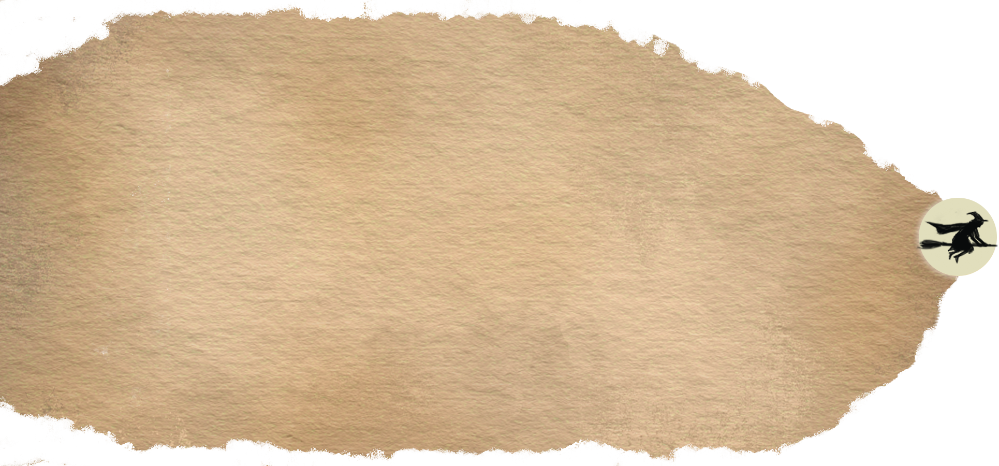
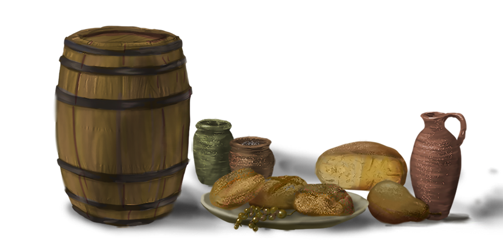
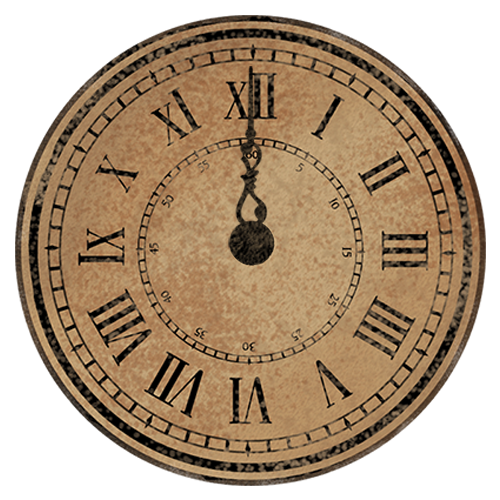
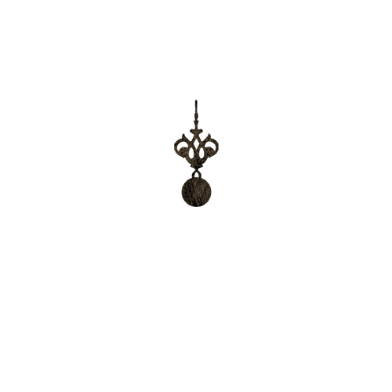
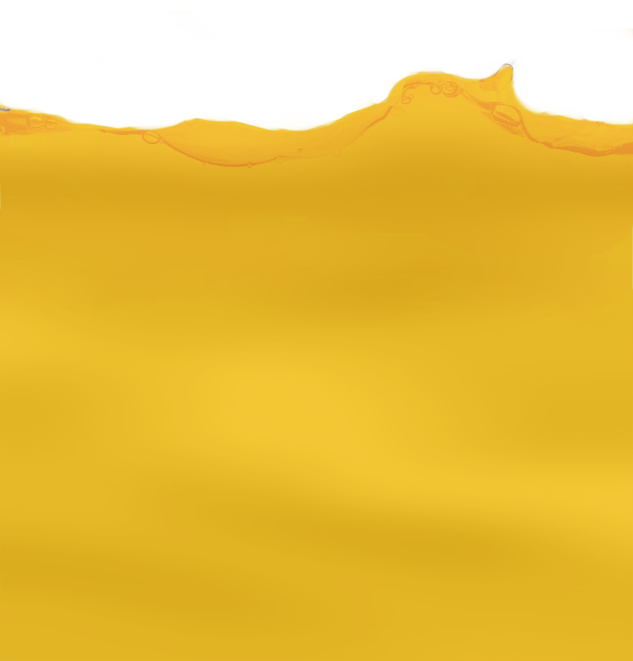
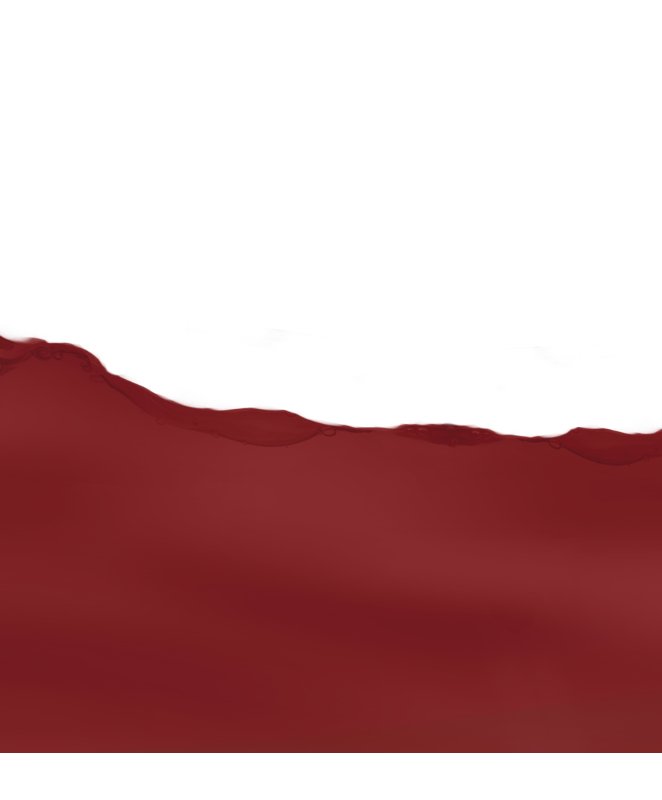
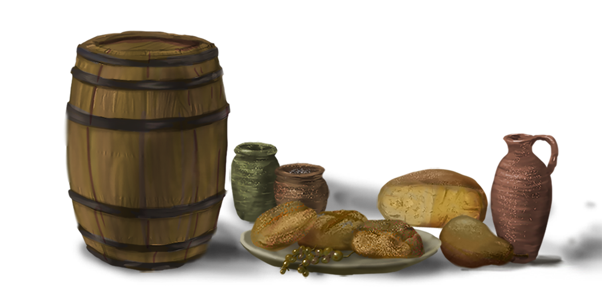
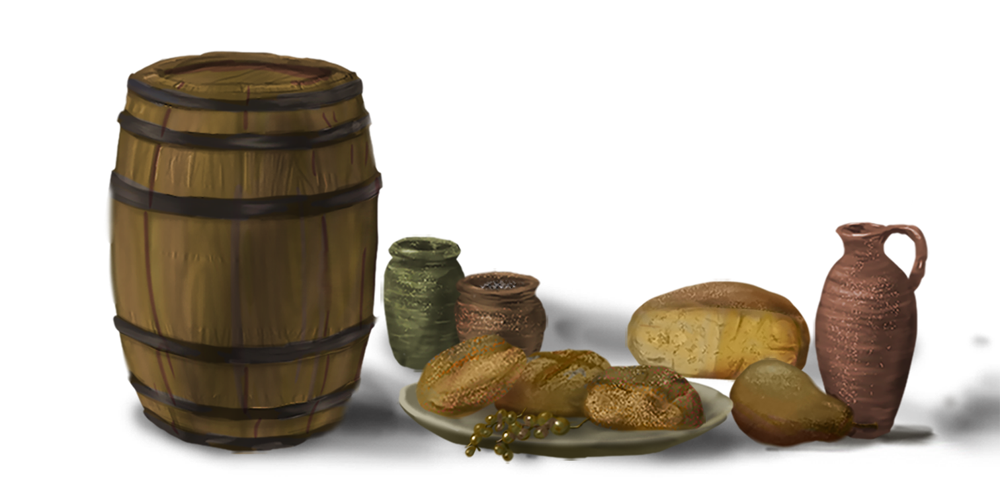
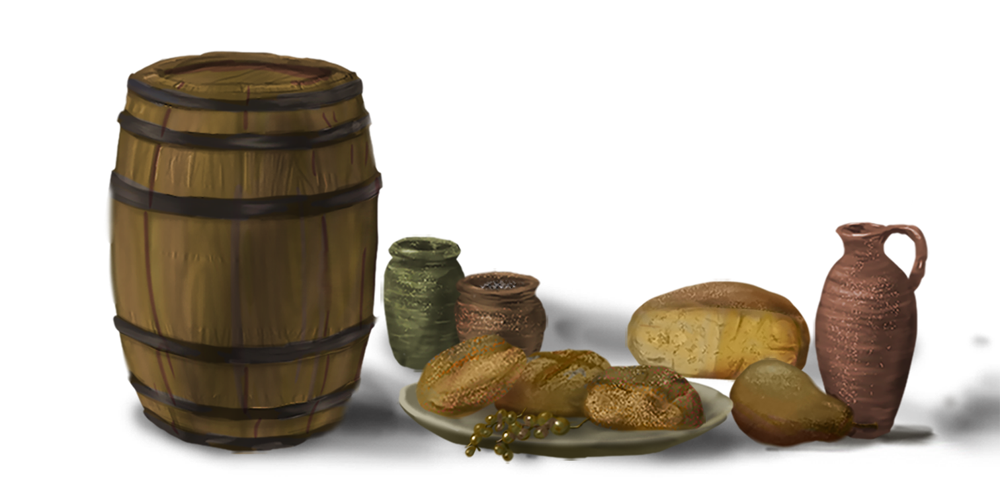
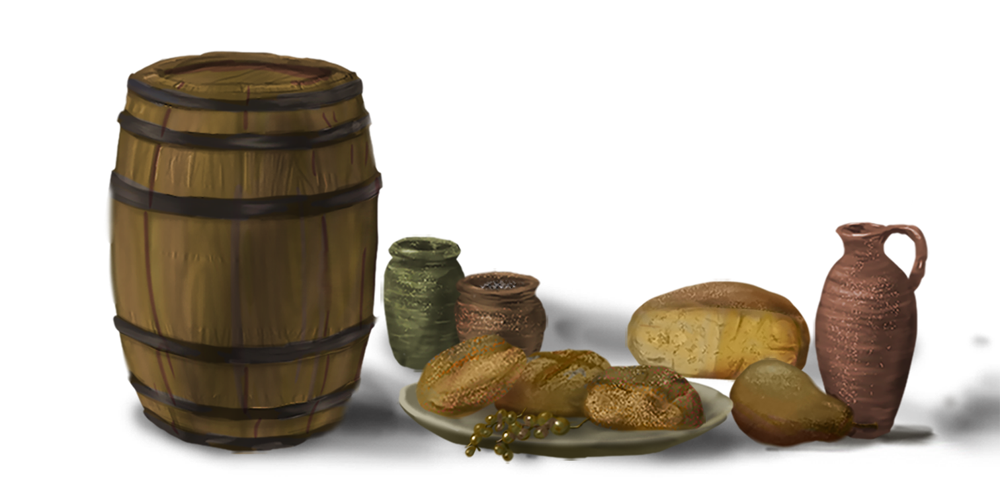

×


中世紀是一日兩餐，不是一日三餐?
 
正餐為早上10點，晚餐為5點
穀類是歐洲人最重要的主食
多數製成麵包，但有時會煮成稀粥和麵條
菁英階層
最好的小麥製作的精白麵粉
價格最高，營養亦高
貧窮家庭
黑麥、大麥甚至燕麥
粗糙麵包托盤的形狀
中世紀常見的醫療方式—藥草
潛
藏
在
大
自
然
中
的
治
癒
能
力
「只喝酒?不喝水?」
中世紀乾淨的水源不易取得
也沒有喝開水的習慣
酒精飲料易保存
啤酒更受平民歡迎，大部分人把啤酒作為飲食的一部分
貴族飲用第一次擠壓出來的上品酒
平民則是二三次擠壓的葡萄酒
而最窮的人只能喝得起葡萄製成的黑醋


一眼就看出差別的服飾?
在中世紀除了用勳章來表明身分外，最直觀的分辨就是用衣料與顏色鮮艷程度區分
貴族
明亮衣服、精緻材料
追求時尚風格
平民百姓
單調、樸素
布料較為粗糙
城鎮 vs 鄉村房屋差別
城鎮—半木結構建築
結合石頭與木材，能保持室內的溫度和濕度
鄉村—木製造房
當時多就地取材，屋頂再加上茅草當屋頂

 


 
